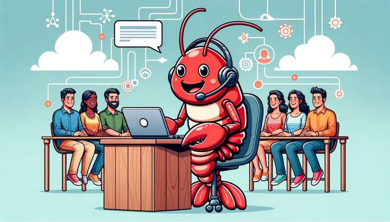
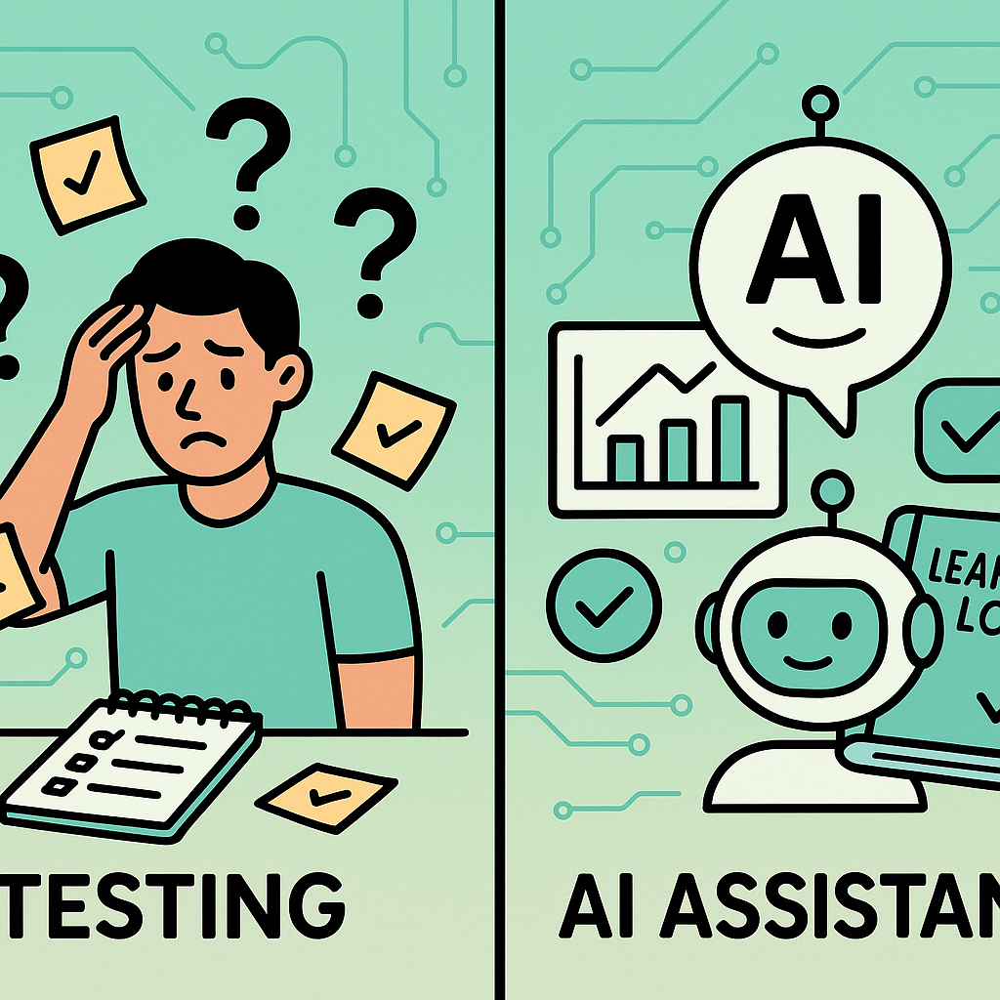
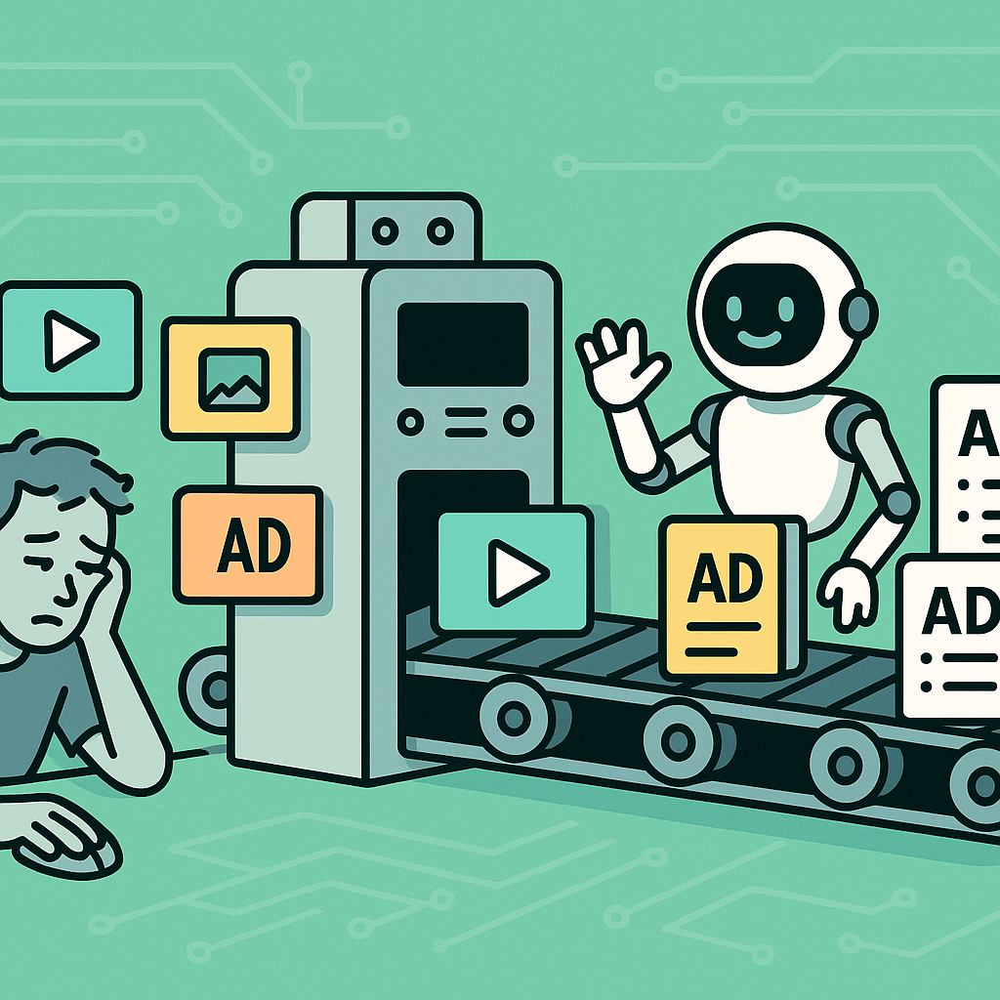

Well... almost.

Here's the truth everyone's dancing around:
AI will not replace media buyers. But media buyers who use AI will replace media buyers who don't.
And it's not close.
We're not talking 10% more efficient. We're not talking "nice to have." We're talking 20x more productive.
The media buyer using AI launches 40 campaign variations while yours is still writing ad names by hand. They test 200 angles per quarter while yours tests 15. They catch compliance issues before they happen while yours is playing whack-a-mole with disapprovals.
Same title. Same role. Completely different output.
So no — you don't need to fire your media buyer. But you do need to ask them one question:
"Are you using AI? And I mean really using it — not ChatGPT for email rewrites. I mean integrated into your actual workflow, every single day."
If the answer is no, you have two options:
Because in 2026, a media buyer without AI isn't "old school." They're not "keeping it simple." They're just... slow.
And slow doesn't scale.
Your media buyer opens Google Ads. Copies an audience. Pastes it into a new campaign. Writes headlines. Checks character counts. Submits. Waits. Gets disapproved. Writes an appeal. Copies case numbers from a spreadsheet. Submits. Waits.
Rinse. Repeat. 50 times a day.
That's not media buying. That's data entry with extra steps.
Manually building campaigns, one click at a time...
"Build me a scaling campaign with our top 20 creatives, safe compliance codes only, $500 daily budget."
Campaign built. 40 ad variations. Compliance-filtered. Ready to upload.
Time: 3 minutes.
Here's what appeals used to look like:
Dig through 47 email threads. Find that one thing the Google rep said 3 months ago. Try to remember which policy section it violated. Write an argument. Submit. Get rejected. Start over.
Miserable.
Real example: I worked with a client in the financial education space — the kind Google loves to flag as "get rich quick" even when it's legitimate coursework.
Before: We couldn't get ads approved. Period. Every submission came back disapproved. We were basically locked out.
After building this system: 378 ads launched, 81% running. Same offer. Same niche. Same Google.
I wake up. My AI has already:
I review. I tweak. I submit.
5 minutes. Done.
Everything served on a silver platter while I drink my coffee.
The appeals win because they're airtight — built on Google's own inconsistencies, their own rep admissions, their own policy contradictions. Try doing that from memory. You can't. No human can track all that context.
But an AI that's been fed every conversation, every outcome, every policy update? It remembers everything. It connects dots you forgot existed.

Let's be honest about how testing actually works for most media buyers:
You see a competitor's ad. "Oh that's interesting, I should test that angle."
You make a mental note. Maybe you jot it down somewhere. Maybe.
Three days later, you remember. You order the creatives. Two weeks go by. The creatives come in. You... forget what you wanted to test in the first place. Or you launch it and then—
You never follow up.
The test runs. You glance at it once. Something shiny catches your attention. You move on. That test? Still running. Burning budget. No learnings captured. No decisions made.
And a learning log? Please. We both know you don't have one. Nobody does. You're supposed to track every test, what you learned, what worked, what didn't — but that's "organized person" work and you've got campaigns to run.
So what happens? Shiny object syndrome. You bounce from idea to idea, test to test, never building on what you learned because you never documented what you learned.
Sound familiar?
Here's the new reality:
You think of a test. You tell your AI: "I want to test long-form VSL hooks against short punchy hooks for the tax yield offer."
Then you forget about it. On purpose.
Because your AI doesn't forget. It:
You didn't have to check. You didn't have to remember. You didn't have to be "organized."
You just had to think of the test.
That's it. That's your job now. Coming up with tests. Your AI handles all the follow-up monkey work.
And here's the part that compounds: your learning log grows. Every week, every month, you and your AI review it together. "What have we learned? What patterns are emerging? What should we test next based on everything we know?"
A year from now, you have 200+ documented tests with clear learnings. Your caveman competitor? He's still going "I feel like we tested that once... didn't work I think? Or did it?"

Let me paint a picture of what ad operations looks like for most media buyers in 2026:
🙄
This is what we call "VA work." Except you're paying a media buyer $100+/hour to do it. And they're burning 10+ hours a week on it.
We solved this on Meta years ago. Kitchn + Dropbox = bulk upload everything. Ad names, creatives, copy, UTMs — all from a spreadsheet. One click. Done.
But Google? YouTube? That was the missing piece. You couldn't bulk upload videos to YouTube and get the video IDs back into your campaign sheet. So everyone was still doing it by hand like cavemen.
Not anymore.
Here's how it works now:
What used to take hours of my time + hours of VA time every single week is now about one hour total.
That's not a marginal improvement. That's getting your life back.
And your media buyer? Still clicking and dragging. Still copy-pasting UTMs. Still typing ad names character by character.
In 2026.
Let me tell you how most creative briefs work:
"Hey, can you write a script for our tax product? Make it punchy. Thanks."
Then you wait two weeks. Get something back. It doesn't quite hit. You give vague feedback. Wait another week. Repeat until everyone's frustrated.
First, every single ad is transcribed and stored. Automatically. Your entire creative library — searchable, analyzable, cross-referenceable.
When it's time to write new scripts, the AI already knows:
So instead of starting from scratch, you say:
"Take our top 5 performing scripts. Build me 3 new variations:
1. Same structure, remove the compliance landmines
2. Mashup of the best hooks from scripts A and C
3. New angle based on the 'skeptic' persona that's converting"
The AI produces detailed drafts with specific notes: "This hook worked in script X (1.2M views, $180 CPA). This claim will get flagged — here's a compliant alternative."
Now your copywriter gets a brief that's actually useful. Not vibes. Data. Specific examples. Clear direction.
They loved it.
I'll be honest. For direct response — the hard-hitting, pattern-interrupt, make-you-stop-scrolling stuff — humans still have the edge. AI can brainstorm angles. It can write solid drafts. It can remix winning concepts.
But that gut-punch hook? The one that makes someone stop mid-scroll and actually watch? That still comes from humans who get the audience.
The play isn't AI vs. copywriters. It's AI + copywriters.
AI does the analysis, the variations, the compliance filtering, the brief building. Copywriters do what they're great at — punching up the hooks, adding the human element, making it hit.
You get more scripts, faster, with better direction. Your copywriters get clearer briefs and less guesswork. Everyone wins.
Except the caveman who's still writing briefs that say "make it punchy."
Every week your media buyer spends on manual work is a week they're not:
The media buyers using AI aren't "ahead of the curve." They're operating in a different reality.
They launch more ads. They get more approvals. They find winners faster. They scale before your buyer even finishes building the first campaign.
And the tools to do this? They exist today. Not expensive. Not complicated. Just... different.
Would you hire an accountant who refuses to use Excel?
"I prefer doing calculations by hand. It's more accurate."
You'd laugh them out of the room.
Now ask yourself: what's your media buyer's excuse for not using AI?
Imagine this:
This isn't science fiction. This is an open-source tool called OpenClaw + a few hours of setup.
I've put together a click-by-click guide showing exactly how to set this up for your media buyer.
No fluff. No theory. Just: install this, configure that, here's the prompts that work.
DM Me on LinkedIn →P.S. — If your media buyer tells you they "don't need AI tools," that's not confidence. That's a calculator-loving accountant telling you Excel is a fad. Time to find someone who wants to win.